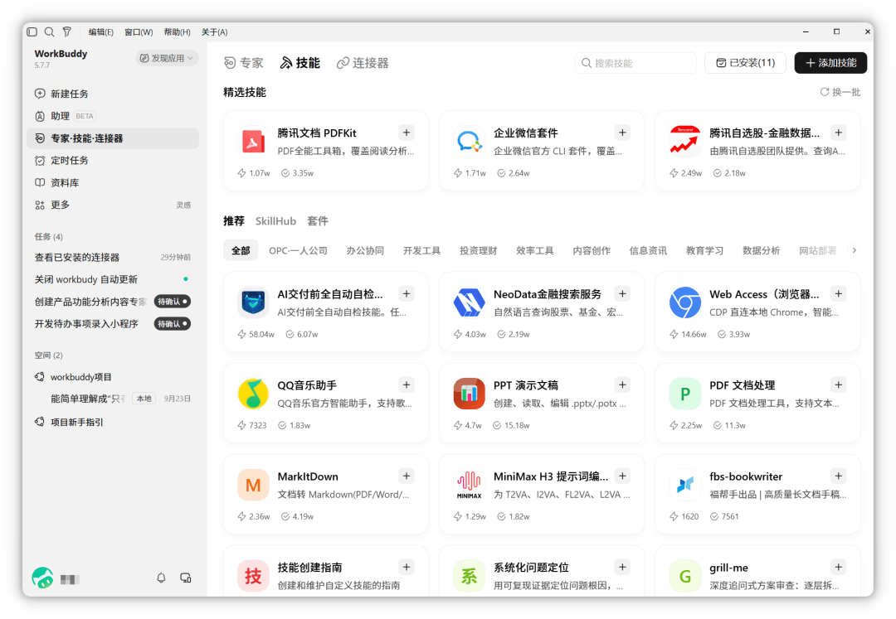

复用校本模板Skill
把常用的教学材料规范保存下来，换主题继续用。


复制到WorkBuddy
请根据附件“校本教学材料规范.md”创建一个教学材料技能，读取我提供的主题材料和学校模板，按学段、课时、目标和成果格式制作文件。保留模板样式，PPT默认不加页码。用“My School Day”试做一次，再说明如何调用。
使用技能：自建教学材料技能
复现方法
- 上传规范和自己的学校模板，复制提示词创建技能。
- 换成My Weekend主题，再调用一次。
使用要点
第二个主题沿用相同格式；材料符合学校模板与教学要求。
扩展提示词
请调用刚创建的技能，把主题换成“My Weekend”，仍按同一规范制作。
适用与扩展
初中英语：保存阅读课练习单标准；语文：单元任务单；数学：例题与变式规范；办公：会议通知和纪要规范。